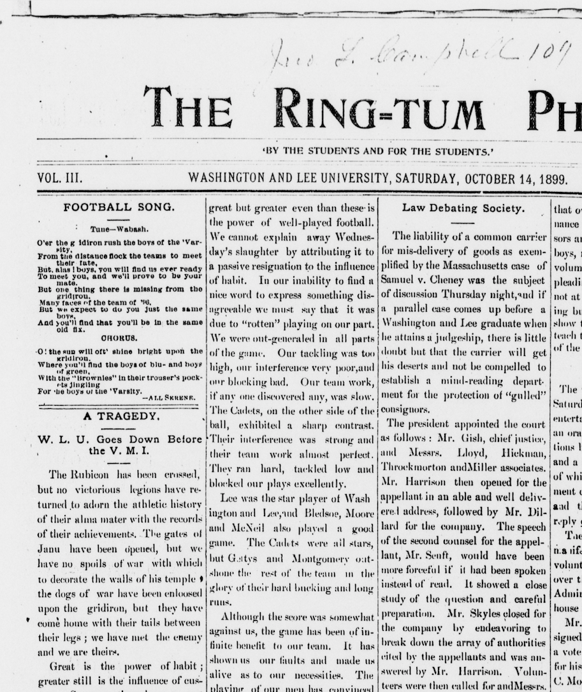
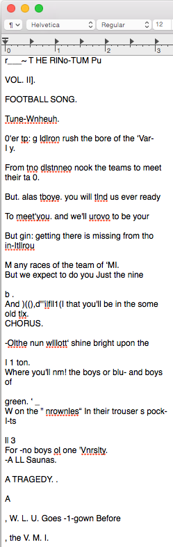
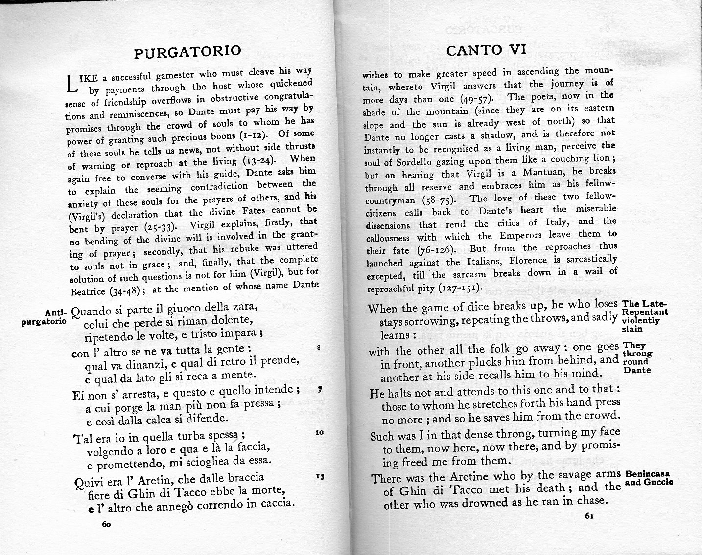
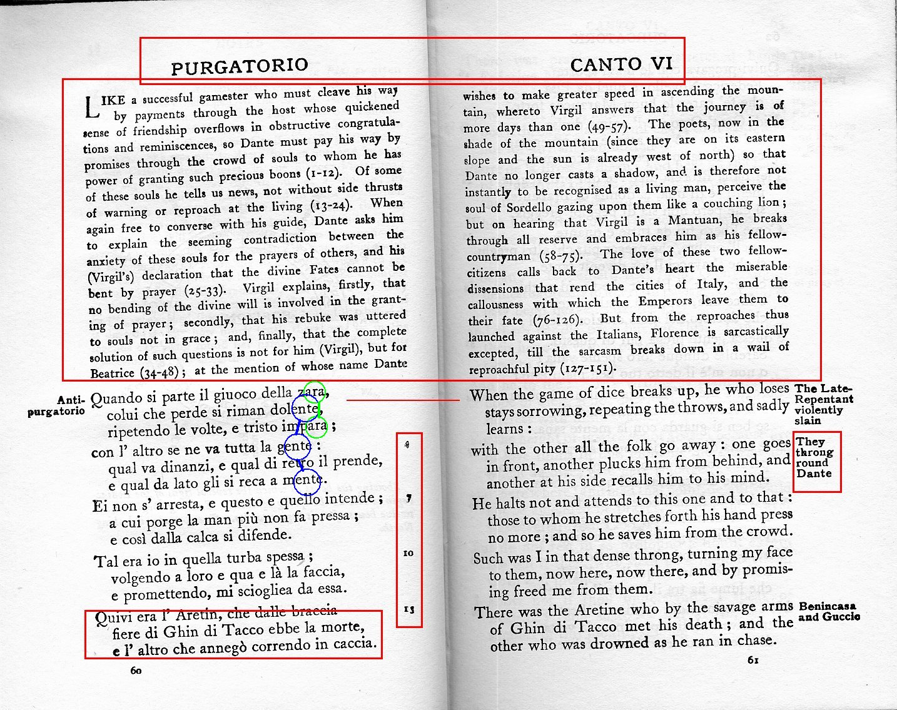
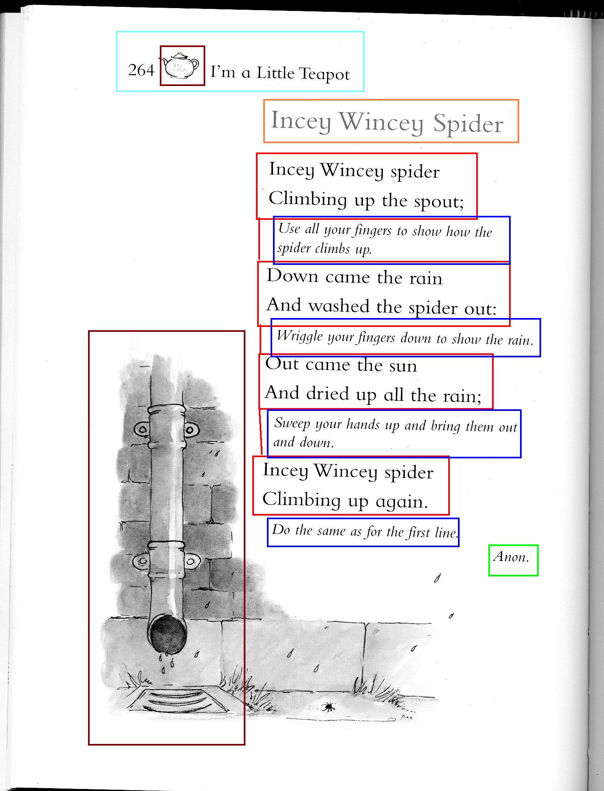
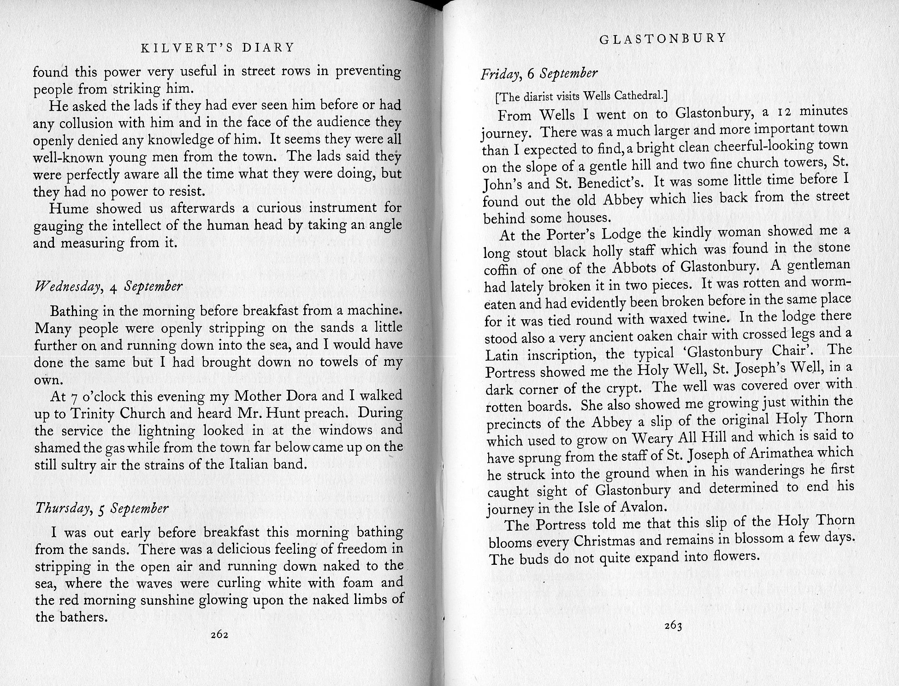
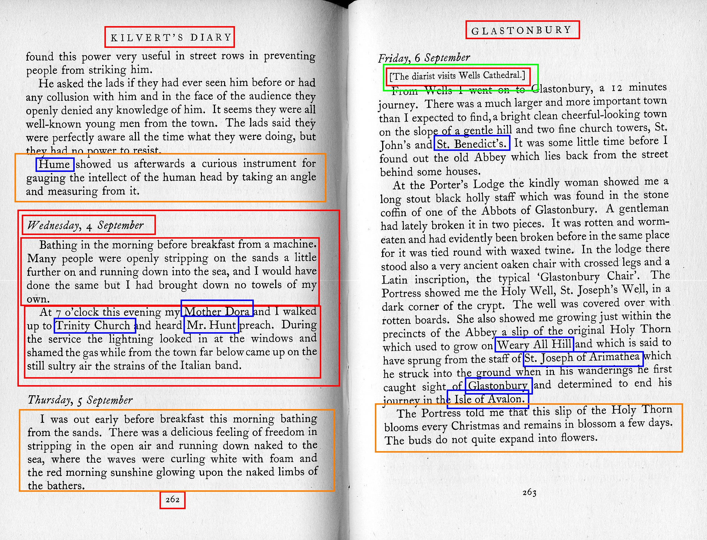
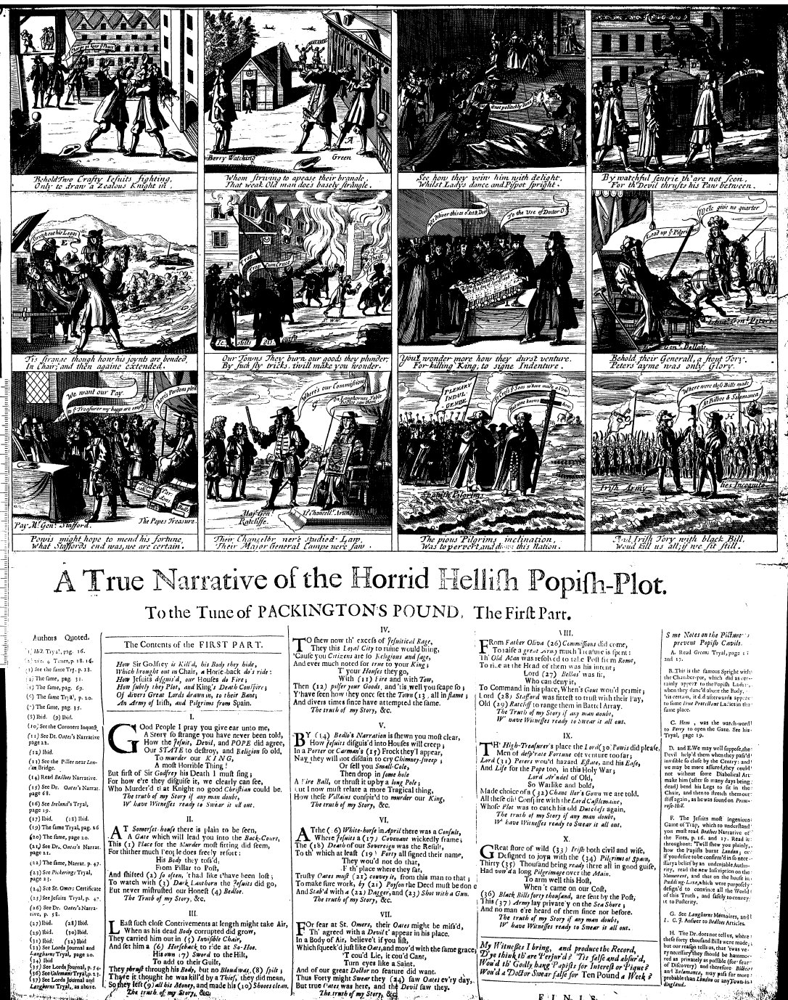
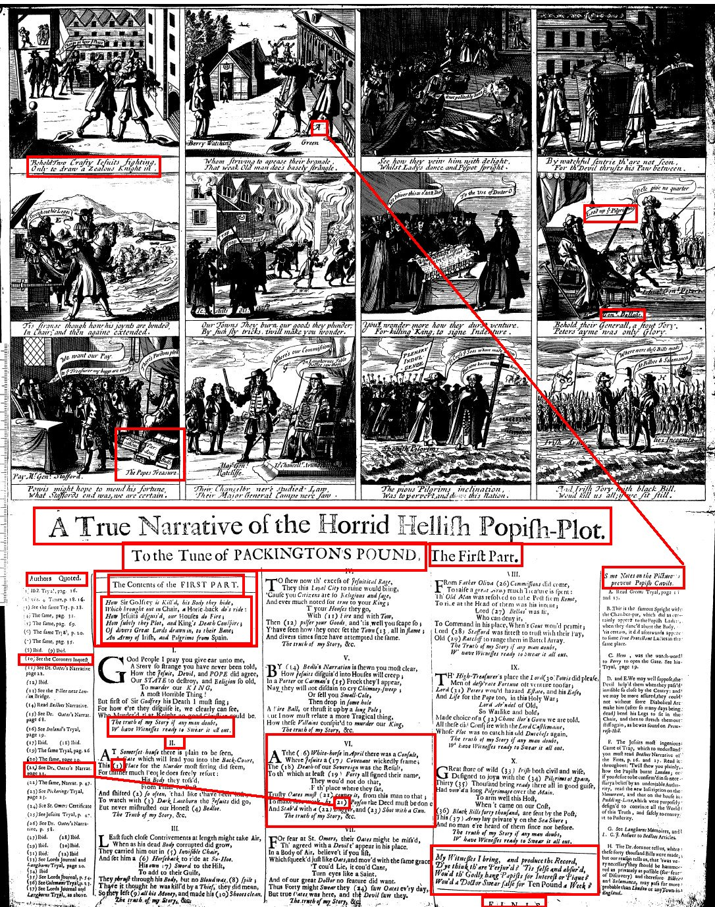

 
Work in your groups to identify all textual and non-textual features of your passage of text.
All documents courtesy of University of Michigan's "A Very Short Introduction to Document Analysis"







And XML-based standard for representing text in digital form.
TEI.2>
<text>
<body>
<p>
<persName id="t17240812-6-defend50" type="defendantName"> Thomas and
<persName id="t17240812-6-defend51" type="defendantName"> Elizabeth Howel
<interp inst="t17240812-6-defend51" type="surname" value="Howel"/>
<interp inst="t17240812-6-defend51" type="given" value="Elizabeth"/>
<interp inst="t17240812-6-defend51" type="gender" value="female"/> </persName>
<interp inst="t17240812-6-defend50" type="surname" value="Howel"/>
<interp inst="t17240812-6-defend50" type="given" value="Thomas"/>
<interp inst="t17240812-6-defend50" type="gender" value="male"/> </persName> , were indicted for High Treason, in
<rs id="t17240812-6-off26" type="offenceDescription">
<interp inst="t17240812-6-off26" type="offenceCategory" value="royalOffences"/>
<interp inst="t17240812-6-off26" type="offenceSubcategory" value="coiningOffences"/> counterfeiting the Coin of this Kingdom, and making 4 Pieces in the resemblance of King William the third's Shillings </rs>, the
<rs id="t17240812-6-cd27" type="crimeDate">6th of August</rs>
<join result="offenceCrimeDate" targOrder="Y" targets="t17240812-6-off26 t17240812-6-cd27"/> last.
<persName id="t17240812-6-person53"> Hannah Lewis
<interp inst="t17240812-6-person53" type="surname" value="Lewis"/>
<interp inst="t17240812-6-person53" type="given" value="Hannah"/>
<interp inst="t17240812-6-person53" type="gender" value="female"/> </persName> depos'd, that Thomas Howel used to come to her Father's Cellar, near
<placeName id="t17240812-6-crimeloc28">St. Giles's Pound</placeName>
<interp inst="t17240812-6-crimeloc28" type="placeName" value="St. Giles's Pound"/>
<interp inst="t17240812-6-crimeloc28" type="type" value="crimeLocation"/> <div type="preface">
<pb facs="tcp:1251200600:2" rendition="simple:additions"/>
<head>PREFACE.</head>
<p>I HERE preſent the Public with a new performance. Some parts of it are more particularly adapted to the State of Pennſyl<g ref="char:EOLhyphen"/>vania, on the preſent ſtate of its affairs: But there are others which are on a larger ſcale. The time beſtowed on this work has not been long, the whole of it being written and printed during the ſhort receſs of the Aſſembly.</p>
<p>As to parties, merely conſidered as ſuch, I am attached to no particular one. There are ſuch things as right and wrong in the world, and ſo far as theſe are parties againſt each other, the ſignature of <hi>COMMON SENSE</hi> is properly employed.</p>
<closer>
<signed>THOMAS PAINE.</signed>
<dateline>Philadelphia, <date>Feb. <hi>18, 1786.</hi>
</date>
</dateline>
</closer>
</div>
</front>
<body>
<div type="text">
<pb n="2" facs="tcp:1251200600:3"/>
<p>
<gap reason="missing" extent="1 page">
<desc>〈1 page missing〉</desc>
</gap>of ſuch powers only as are conſtituent parts of the go<g ref="char:EOLhyphen"/>vernment, not of thoſe powers which are externally ap<g ref="char:EOLhyphen"/>plied to reſiſt and overturn it.</p>
<p>IN Republics, ſuch as thoſe eſtabliſhed in America, the ſovereign power, or the power over which there is no controul and which controuls all others, remains where nature placed it; in the people; for the people in America are the fountain of power. It remains there as a matter of right, recognized in the conſtitutions of the country, and the exerciſe of it is conſtitutional and legal.—This ſovereignty is exerciſed in electing and deputing a certain number of perſons to repreſent and act for the whole, and who, if they do not act right, may be diſplaced by the ſame power that placed them there, and others elected and deputed in their ſtead, and the wrong meaſures of former repreſentatives corrected and brought right by this means. Therefore the republican form and principle leaves no room for inſurrection, becauſe it provides and eſtabliſhes a rightful means in its ſtead.</p>
<hi style="font-size: 125%;">Taking beginning in the morning at his Lord-
</hi>
<lb/>
<hi style="font-size: 110%;">ſhips going, and
p<supplied reason="ink-smudged" evidence="external" source="mol:TAYL9" resp="mol:MILL2">erfecting
<note type="editorial" resp="mol:MILL2">Text unclear because of smudged ink. Supplied from <ref type="bibl" target="mol:TAYL9">Taylor and Lavagnino text</ref>.
</note>
</supplied> it ſelfe after his returne
</hi><lb/>data about data